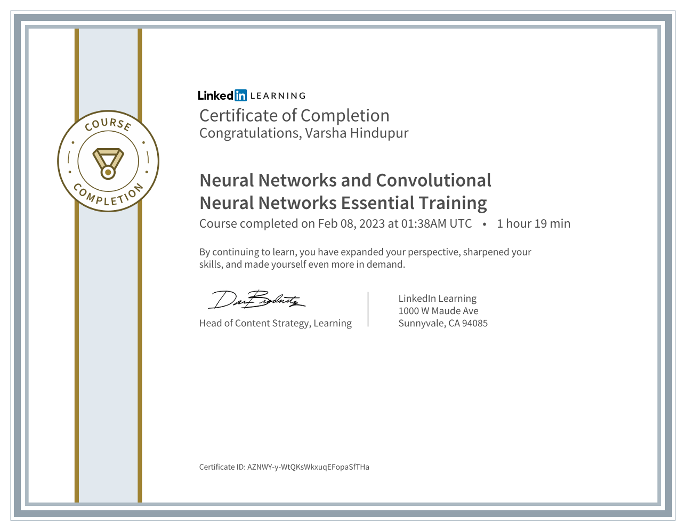
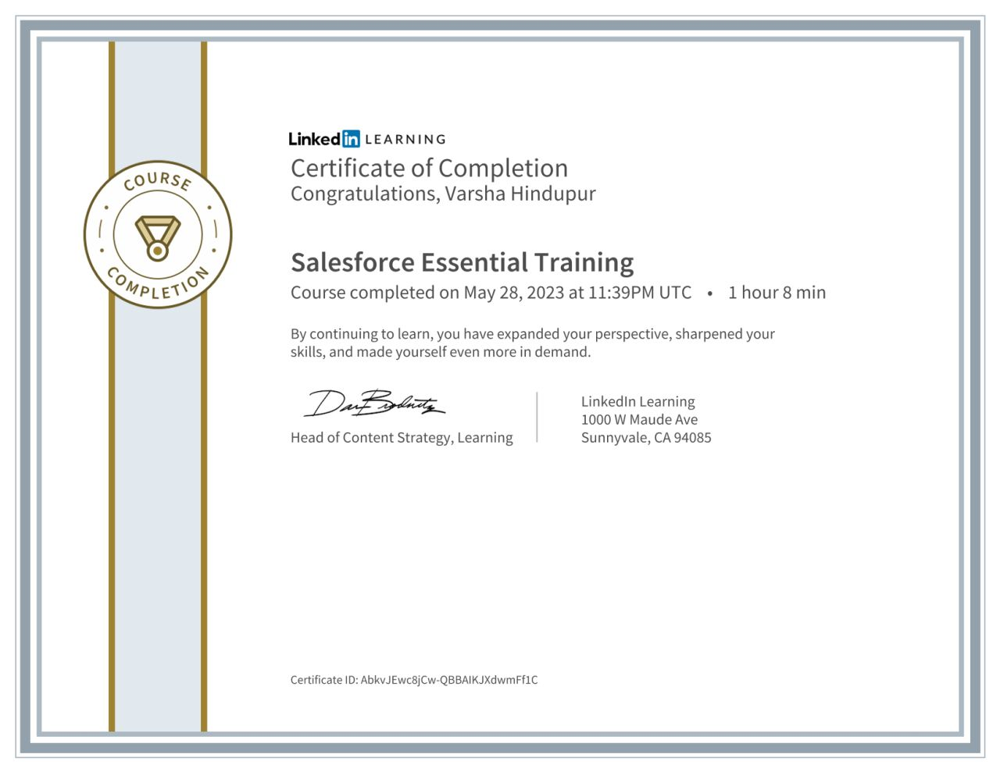
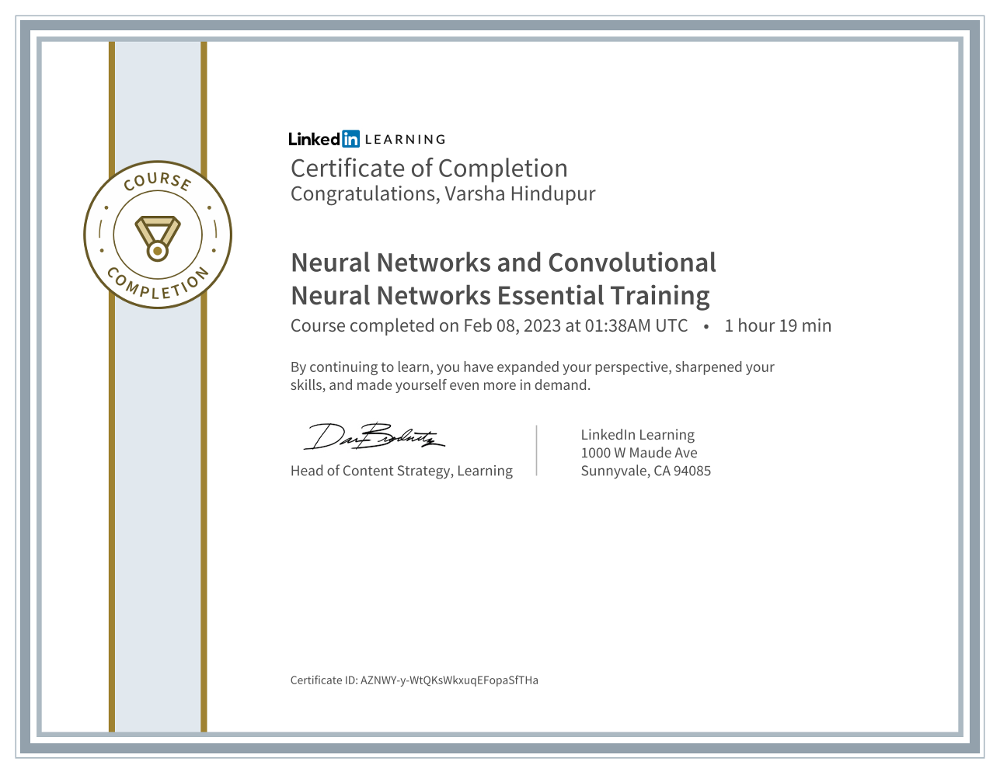
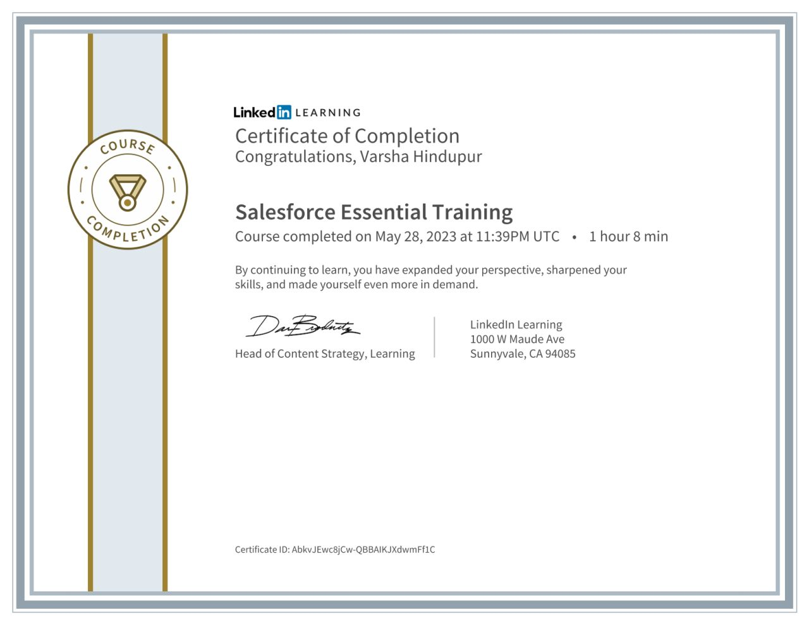

About
I'm pursuing Master of Science in Information Systems at Northeastern University, Boston.
Experienced Software Developer and Data Engineer with a strong background in building scalable applications and optimizing data processing pipelines. Skilled in programming languages such as Python, Java, and SQL, and proficient in big data technologies like PySpark, Hadoop, and AWS. Adept at leveraging tools like GraphQL for efficient API development and data retrieval. Proven ability to streamline workflows, enhance system performance, and lead teams to deliver high-impact solutions. Demonstrated success in improving credit risk analysis, reducing query times, and mentoring junior engineers. Skilled in cloud architecture and automation using AWS, CloudFormation, and DevOps practices.
After pursuing Co-Op at Novelis, I am ready to pursue my NEXT EXCITING JOURNEY!
I'm open for full-time opportunities starting January 2025!!

Versatile Data Professional | ML & AI Aficionado | Software Engineer | Software Tester
- University: Northeastern University
- Degree: Master of Science in Information Systems
- City: Boston, USA
- Email: varsha.hindupur@gmail.com
- GitHub
- Medium Blog Profile & Articles
- Courses:
- 1. Web Development Tools and Methods (INFO6250)
- 2. Application Engineering and Development (INFO5100)
- 3. Big Data Systems and Intelligent Analytics (INFO7245)
- 4. Data Science Engineering Methods and Tools (INFO6105)
- 5. Generative Artificial Intelligence (AI & Finance) (INFO 7375)
- 6. High Parallel Computing in Machine Learning & AI (CSYE7105)
- 7. Program Structure and Algorithms (INFO6205)
- 8. AI/ML Prompt Engineering (INFO7375)
Professional Experience
Summary
Varsha Hindupur
Delivering MLaaS, SaaS, DaaS solutions for 2+ years, 5+ years in software testing, seeking new challenges
- Boston, MA
- varsha.hindupur@gmail.com
Education
Master of Science in Information Systems
2022 - 2024
Northeastern University, Boston, MA
During my time at Northeastern, I had the opportunity to work as a Research Assistant (RA) on two occasions with different Professors, Amy Pei and Prof. Kelly Wellman. I gained valuable hands-on experience in conducting research and applying theoretical knowledge to real-world challenges.
Bachelor of Engineering in Information Technology
2012 - 2016
K.J.Somaiya (KJSIEIT), Mumbai, Maharashtra, India
Throughout my Bachelor's journey, I have honed my expertise in areas such as programming, database management, web development, networking, and cybersecurity. With a passion for innovation and problem-solving, I am dedicated to leveraging my knowledge to create efficient and cutting-edge solutions in the field of Information Technology.
Professional Experience
Full Stack Developer
Feb 2024 - May 2024
Northeastern University, Boston, MA
- Implemented a survey web application using React for the front end, Node.js for the back end, and MongoDB for the database.
- Built RESTful APIs with JSON for seamless data exchange and integrated JWT tokens for authentication, increasing security by 30%.
- Accelerated release cycles by 40% using CI/CD pipelines with GitHub Actions and Docker, deploying to AWS S3/CloudFront, and Elastic Beanstalk for a microservice architecture serving 2 million users.
- Achieved 99% uptime and reduced query time by 200ms through MongoDB text indexing and optimization.
- Debugged deployment issues with Cloudwatch monitoring, analyzed logs, and used custom alarms to detect failures.
- Built timer and session components, managed back and refresh navigation, and calculated payments and incentives, displaying final amounts across all pages.
- Collected participants from Prolific and developed automated systems to process participant payments based on various evaluation criteria.
- Automated Prolific participant payments by calculating totals and incentives using evaluation criteria, integrating API to track and apply final payments based on page numbers and participant IDs
- Skills:
- Cloud Services: AWS Route53, S3, AWS QuickSight Data Analytics
- Databases: MongoDB, Mongoose Framework, SQLAlchemy
- Frameworks & Libraries: FastAPI, ReactJS, Express.js, Mongoose.js
R&D Ecosystem Co-ordinator Co-Op
May 2023 - Dec 2023
R&D Ecosystem & Data Science
Novelis - An Aditya Birla Company, Atlanta, GA
- Launched a state-of-the-art meeting intelligence application that converted voice to text, offering instant transcriptions, summaries, and answers to meeting-related queries.
- This tool significantly saves time for busy executives by streamlining their meeting reviews.
- Used Kubernetes for deployment and load balancing
- Built data pipeline using Azure Data Factory to ingested streaming data from Accolade into Snowflake, enabling real-time analysis of project ROI, enhancing decision-making by 40%, saving almost $50K
- Skills: Power BI, Salesforce, LLM, Arize, Azure MLOps, KPI monitoring, Azure DevOps, CLI, Azure App Service, Kubernetes (K8)
Software Engineer, Data Science
Feb 2023 - May 2023
Department: Marketing Research Academia
Northeastern University, Boston, MA
Manager: Prof. Amy Pei
- Delivered data mining scripts for collecting over 50 brand-related data points from the Twitter API and Selenium.
- Engineered features in images using OpenCV and Keras, processing over 1000 records to compute 20 attributes within 30 seconds.
- Deployed a Convolutional Neural Network (CNN) with the DeepFace model on AWS Sagemaker for face recognition tasks, increasing precision and F1 score by 25%.
- Integrated the solution into a comprehensive Marketing Academia-Research project, providing valuable insights into diversity metrics using Tableau.
- Researched and executed codes on Northeastern's High Performance Computing Cluster (Discovery) using the v100-sxm2 GPU.
- Skills: Computer Vision, CNN, DeepFace, Image Analysis, AWS Sagemaker, HPC (Discovery)
HandCraftedStyles (Co-Founder)
Jan 2020 - Present
Mumbai, India
- Led marketing, driving 50K+ INR in sales in a year through content creation and customer engagement.
Senior Quality Analyst - Automation
Dec 2020 - Aug 2022
UST Global - Xpanxion (Blueconch Technologies), Pune, India
- Improved delinquency credit risk assessments by optimizing historical payment data retrieval with custom hash maps, reducing query time by 30% and speeding up high-risk account processing by 2 business days
- Developed complex Oracle SQL queries and stored procedures to meet business requirements, enhancing data retrieval and reducing query execution time by 5 seconds per query
- Mentored 8 juniors, improved team performance by 30%, lowered delivery time by 15% showcasing leadership
- Designed functional, integration tests automation suite - Ruby, Playwright reducing 98% defect pre-release
- Enhanced Cucumber test scenarios and frameworks to improve test coverage and execution speed
- Reduced error rates by 25% and improved script re-usability by 50% for 5 projects, ensuring 80% test coverage across major browsers
- Used PySpark to process 10M+ credit records and integrated GraphQL for targeted querying, improving credit risk analysis and reducing processing time by 25%<\li>
- Skills:
Senior Software Test Engineer Analyst
Mar 2019 - Dec 2020
Accenture, Mumbai, India
- Set up Jenkins CI/CD pipelines, ensured rapid feedback on code changes and improved deployment speed
- Leveraged Core Java for multithreading, concurrency, file handling I/O, data structures, and garbage collection to optimize game performance and memory management
- Managed dependencies and project configurations using \textbf{Maven}, ensured smooth build processes for Java app
- Automated regression tests using Java, Selenium WebDriver, Karate, decreasing testing time by 70%
- Spearheaded RestAssured test cases for API validation, including OAuth and API key authentication
- Mentored 8 juniors, improved team performance by 30%, lowered delivery time by 15% showcasing leadership while working on pharmaceutical healthcare client
- Skills:
Test Engineer
Mar 2017 - Mar 2019
Infosys, Pune, India
- Automated test suit with Python, Selenium WebDriver, Cucumber, TestNG, cutting regression time by 55%
- Performed performance testing with JMeter, optimized load handling by 30% by resolving bottlenecks
- Managed code repositories and performed version control using GIT, ensuring collaboration and code integrity
- Skills:
Game Development Intern
Nov 2016 - Jan 2017
Rendered Ideas, Mumbai, India
- Enhanced gameplay with physics-based mechanics in a custom-built, Java-based game engine and integrated sentiment analysis, resulting in a 10x increase in downloads
- Skills: Sentimental Analysis, Microsoft Excel, SAS, ETL
Academic Projects
Presenting a collection of my diverse undertakings – a carefully curated assortment of projects that showcase my dedication and creative abilities.
Real-Time Stock Price Tracker | Event Driven Architecture
Aug 2024
Tech Stack: Spring Boot, Kafka, RabbitMQ, JMS, and WebSocket, Java
- Crafted this tracker using \textbf{Spring Boot, Kafka, RabbitMQ, JMS, and WebSocket}, processing and broadcasting updates to many concurrent users

FoodKing Interactive: LLM Gemma-Powered Dining Experience
June 2024
Tech Stack: Streamlit, Ollama Gemma:2B, Docker, Python
- Developed a chatbot to assist customers in placing orders and answering queries about the FoodKing restaurant menu.
- Utilized Streamlit for building the web interface and Ollama Gemma:2B for natural language processing, all running locally using Docker.
- Implemented a dynamic menu system with selectable sizes and quantities, integrating the chatbot for seamless interaction.
- Achieved a user-friendly interface where customers can view the menu, interact with the bot, and manage their cart simultaneously.
Predict Lung and Colon Cancer
Apr 2024
Tech Stack: Discovery (NEU HPC), ResNet50, Neural Network Modeling
- Trained, executed ResNet50 on 5000 image dataset having 5 cancer types, producing results in 36 seconds with 90% accuracy.
- Methods used to increase the performance of the models: Serial Execution, DDP (Distributed Data Parallel) on CPU, DDP on GPU, Model Parallelism, AMP (Automatic Mixed Precision)
- And, as per the result part we could train our model in 30 seconds using the parallel processing techniques and still maintain the accuracy to 93% overall.
- The procedures used were 24 times efficient when compared to Serial Executions on CPU. Speedup received was more than 50%. Overall, if all the model executes in 30 seconds with the use of modern compute resources, then we have achieved our goal of making the product available to consumers and businesses.
Netflix Movie Recommendation Engine
Jan 2024 - Present
Tech Stack: Data Mining, Data Science, Data Visualization, Machine Learning
- Added innovative 'Mood Based Recommendations' reflecting users' emotional states.
- Cleansed, refined, and integrated Netflix Prize Data from TXT files into a single CSV containing user ratings, customer IDs, movie IDs, titles, dates, genres, and release years.
- Utilized web scraping to extract genre information from IMDb for analysis and recommendation.
- Implemented Collaborative Filtering to suggest movies based on users' watch history.
- Executed code on Northeastern's High Performance Computing Virtual Machine Discovery for 50% surge in performance.

SpaceX Data Science & Analysis Project
Tech Stack - Python, Data Science, Machine Learning, Exploratory Data Analysis (EDA)

Real-Time Data Streaming - A Data Engineering Project
Tech Stack - Apache Airflow, Python, Apache Kafka, Apache Zookeeper, Apache Spark, Cassandra, PostgreSQL, Docker
Ride Price Forecasting (Uber/Lyft)
Tech Stack - Linear Regression, Decision Tree, Gradient Boosting Regressor, Folium

Text Analysis - Natural Processing Language
Tech Stack - Python: NLTK, SpaCy, Sci-kit Learn, Gensim, TF-IDF, Seaborn, SQLite

Aircast - Air Quality Prediction
Tech Stack - Python, Streamlit, FastAPI, Airflow, AWS RDS, AWS EC2, Hugging Face LSTM ML Model

Titanic Survival Prediction using Neural Network
Tech Stack - Python, NumPy, Pandas, Matplotlib, Logistic Regression

MeetIn - a Meeting Intelligence Application
Tech Stack: Python, Streamlit, FastAPI, Airflow, AWS RDS, AWS EC2
2023

Regency, Frequency, Monetory - KMeans Clustering
Tech Stack: Python, Kmeans Clustering Machine Learning Algorithm
Medium Blog
LeetCode & HackerRank Adventures: Conquering Advanced SQL and Windows Functions for Database Mastery
Summarizing lecture from Data+AI World Tour by Databricks: Delta Live Tables A to Z: Best Practices for Modern Data Pipelines
 





Extra-Curricular
Proud to be a "Tech Expert" at @NEUBlockChain student organization
Testimonials
LinkedIn: LinkedIn Recommendations
Professor Kelly Wellman, Manager @NortheasternUniversity: (Boston, MA)
I had the pleasure of supervising Varsha on a full-stack project, and she excelled in every aspect. She implemented a survey web app using React and Node.js, efficiently managing the MongoDB database and optimizing query execution times. Varsha also built secure RESTful APIs with JWT for authentication, ensuring the safety of participant data. She deployed the project using AWS Elastic Beanstalk and S3, automating the process with CI/CD pipelines. Varsha’s ability to deploy code as soon as her tasks were completed made the project more accessible and convenient for my team. Additionally, she debugged issues swiftly and suggested valuable features that reduced manual effort and accurately captured requirements. Her proactive approach with CloudWatch monitoring during deployments in an Agile environment was invaluable. I highly recommend her for any role as she has the leadership and mentoring qualities needed for any role.
Chirag Agrawal, Manager @Novelis:
I highly recommend Varsha for her performance as a software engineer during her internship on our team. She made significant contributions to the application we are developing. Varsha's commitment and ability to exceed expectations had a substantial impact on the project timeline. Based on my experience working with Varsha, I have full confidence in her skills and dedication, making her an invaluable asset in any professional setting.
Prathyusha Sathineni, Colleague & Acting Lead @Novelis:
Varsha was an amazing intern to work with! She's a fast learner who tackles new challenges easily and understands complex stuff effortlessly. She loves learning and she not only picks up things fast but also dives deeper with thoughtful questions. She’s always ready to help team members, fostering a great team spirit. Working with her was a pleasure, and I'm sure her curiosity and hard work will lead her to success in the future. Her dedication and proficiency make her a valuable asset to any team.
Clifford Owino, Colleague @Novelis:
I had the pleasure of working alongside Varsha during her internship, and I am delighted to provide my wholehearted endorsement. Varsha is a quick learner who adapts effortlessly to new challenges, demonstrating a remarkable ability to grasp complex concepts with ease.
What sets Varsha apart is her proactive approach to learning. Not only does she absorb information rapidly, but she also consistently seeks to deepen her understanding by asking insightful questions. Her curiosity and eagerness to delve into the details make her a standout intern.
Varsha's commitment to her role extends beyond her own tasks. She consistently offers her assistance to colleagues, demonstrating a strong team spirit. Her willingness to help and collaborative mindset significantly contributed to the positive dynamics within our team.
I am confident that Varsha's intellectual curiosity, combined with her strong work ethic, will lead her to great success in her future endeavours. It was a pleasure working with such a talented and dedicated intern.
Professor Amy Pei, Manager @NortheasternUniversity: (Boston, MA)
I highly recommend Varsha for her exceptional coding work as a research assistant in my project. Working with Varsha was an absolute pleasure, thanks to her exceptional ability to understand and execute task requirements with ease. Notably, she possesses a remarkable skill to comprehend and effectively work on assignments even when presented with high-level instructions alone. One of the most impressive aspects of Varsha’ work was her ability to tackle challenging problems and develop innovative solutions. She exhibited a proactive and analytical approach when faced with complex coding tasks, effectively breaking them down into manageable components and delivering solutions that exceeded expectations. I especially appreciated her attention to detail and dedication to producing clean and readable code.
Hobbies
Fitness, Yoga, Reading, Sports, Hiking, Art, Music, Theatre
Contact
Let's Connect and Collaborate! I'm thrilled to hear from you and explore potential opportunities. Whether you have a project in mind, a question to ask, or just want to say hello, feel free to get in touch. I'm here to engage in meaningful conversations and exciting ventures.
varsha.hindupur@gmail.com
hindupur.v@northeastern.edu